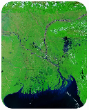

GreenOrbit — Forest & Biodiversity Watch
Use Earth observation data to investigate changes in forests, vegetation, and habitats.
- Compare satellite imagery across different dates.
- Visualize vegetation-index changes.
- Identify areas that warrant further habitat investigation.
- Create a biodiversity-awareness map.
Categories: Flora & Fauna, Habitats, Earth Science, Agriculture, Pollution, Data Analysis.
Imagery comes live from NASA GIBS (MODIS Terra, ~250 m). Results are screening indicators that point to places worth investigating. They are not proof of deforestation or species loss.
Choose an area and dates, then press Load & Analyse.
Change Summary
Waiting for analysis…
Areas Warranting Investigation
Largest vegetation-index declines among cells with enough clear pixels. Click one to locate it.
None yet.
About this area
How to read this, and its limits
- The vegetation index here is a visible-band greenness proxy, (G − R) / (G + R) computed from true-colour imagery. It is not true NDVI, which needs a near-infrared band.
- Clouds, haze and shadows are filtered with a simple brightness rule, but some will slip through and look like change.
- Compare the same season. Crops, monsoon flooding and dry-season browning change the index without any forest loss.
- At ~250 m per pixel, small clearings and individual trees are invisible.
- The biodiversity-awareness map ranks relative vegetation cover and trend inside this scene. It contains no species data and is not a habitat-quality or conservation-status assessment.
- Always confirm flagged areas with higher-resolution imagery or field checks.